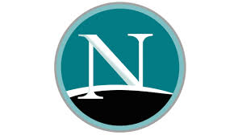

Browser Wars
What is a browser war?
A browser war is competition for dominance in the usage share of web browsers. The "First Browser War" during the late 1990s pitted Microsoft's Internet Explorer against Netscape's Navigator.[2] Browser wars continued with the decline of Internet Explorer's market share and the popularity of other browsers including Firefox, Google Chrome, Safari, and Opera. With the introduction of HTML5 and CSS 3, a new generation of browser war began, this time adding extensive client-side scripting to the World Wide Web, as well as more widespread use of smartphones and other mobile devices for browsing the web. These newcomers have ensured that browser battles continue among enthusiasts, while the average web user is less affected.
Browser war in 1990's -Netscape was the dominant browser across all platforms before Microsoft decided to enter the market in the 1990s. Microsoft was willing to lose money making its web browsers because the loss could easily be made up by selling its operating system and other products. The turning point came in 1997, when both companies released their 4.0 versions. Both browsers were suffering from featuritis, but Microsoft’s pricing strategy – in which the the browser was given away for free – made its flaws easier to stomach.
Mosaic Wars
Further browsers were released in 1993, including Cello, Arena, Lynx, tkWWW, and Mosaic. The most influential of these was Mosaic, a multiplatform browser developed at National Center for Supercomputing Applications (NCSA). By October 1994, Mosaic was "well on its way to becoming the world's standard interface", according to Gary Wolfe of Wired. Several companies licensed Mosaic to create their own commercial browsers, such as AirMosaic and Spyglass Mosaic. One of the Mosaic developers, Marc Andreessen, co-founded the Mosaic Communications Corporation and created a new web browser named Mosaic Netscape. There are two ages of the Internet—before Mosaic, and after. The combination of Tim Berners-Lee's Web protocols, which provided connectivity, and Marc Andreesen's browser, which provided a great interface, proved explosive. In twenty-four months, the Web has gone from being unknown to absolutely ubiquitous. — Mark Pesce, ZDNet o resolve legal issues with NCSA, the company was renamed Netscape Communications Corporation and the browser Netscape Navigator. The Netscape browser improved on Mosaic's usability and reliability and was able to display pages as they loaded. By 1995, helped by the fact that it was free for non-commercial use, the browser dominated the emerging World Wide Web. Other browsers launched during 1994 included IBM Web Explorer, Navipress, SlipKnot, MacWeb, and Browse. In 1995, Netscape faced new competition from OmniWeb, WebRouser, UdiWWW, and Microsoft's Internet Explorer 1.0, but continued to dominate the market.
First Browser War (1995–2001)
git - By mid-1995, the World Wide Web had received a great deal of attention in popular culture and the mass media. Netscape Navigator was the most widely used web browser and Microsoft had licensed Mosaic to create Internet Explorer 1.0, which it had released as part of the Microsoft Windows 95 Plus! pack in August.
- In October 1997, Internet Explorer 4.0 was released. The release party in San Francisco featured a ten-foot-tall letter "e" logo. Netscape employees showing up to work the following morning found the logo on their front lawn, with a sign attached that read "From the IE team ...We Love You." The Netscape employees promptly knocked it over and set a giant figure of their Mozilla dinosaur mascot atop it, holding a sign reading "Netscape 72, Microsoft 18" representing the market distribution.
- During the United States Microsoft antitrust case in 1998, government witness and Intel vice president Steven McGeady testified that a senior executive at Microsoft told him in 1995 of his company's intention to "cut off Netscape's air supply", although a Microsoft attorney rejected McGeady's testimony as not credible. That same year, Netscape, the company, was acquired by America Online for US$4.2 billion. Internet Explorer became the new dominant browser, attaining a peak of about 96% of the web browser usage share during 2001.
- The first browser war ended with Internet Explorer having no remaining serious competition for its market share. This also brought an end to the rapid innovation in web browsers; until 2006 there was only one new version of Internet Explorer since version 6.0 had been released in 2001. Internet Explorer 6.0 Service Pack 1 was developed as part of Windows XP Service Pack 1 and was also integrated into Windows Server 2003. Further enhancements were made to Internet Explorer in Windows XP Service Pack 2 (released in 2004), including a pop-up blocker and stronger default security settings regarding the installation of ActiveX controls.
Second Browser War (2004–2017)

- At the start of Netscape Navigator's decline, Netscape open-sourced their browser code, and later entrusted it to the newly formed non-profit Mozilla Foundation—a primarily community-driven project to create a successor to Netscape. Development continued for several years with little widespread adoption until a stripped-down browser-only version of the full suite, which included new features such as a separate search bar (which had previously only appeared in the Opera browser), was created. The browser-only version was initially named Phoenix, but because of trademark issues that name was changed, first to Firebird, then to Firefox. This browser became the focus of the Mozilla Foundation's development efforts and Mozilla Firefox 1.0 was released on November 9, 2004. It then continued to gain an increasing share of the browser market until a peak in 2010.
- In 2003, Microsoft announced that Internet Explorer 6 Service Pack 1 would be the last standalone version of its browser. Future enhancements would be dependent on Windows Vista, which would include new tools such as the WPF and XAML to enable developers to build web applications.
- In response, in April 2004, the Mozilla Foundation and Opera Software joined efforts to develop new open-technology standards which add more capability while remaining backward-compatible with existing technologies. The result of this collaboration was the WHATWG, a working group devoted to the fast creation of new standard definitions that would be submitted to the W3C for approval.